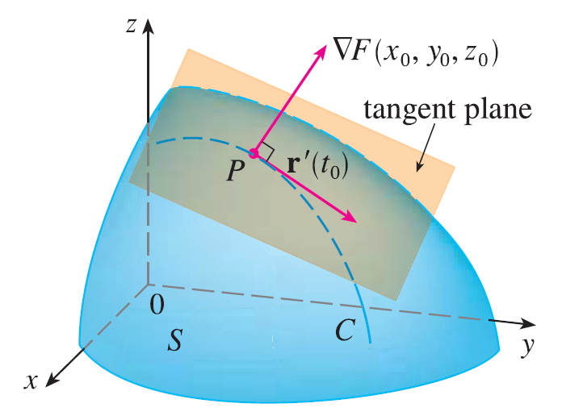

Suppose S is a surface with equation \(F(x, y, z) = k\), that is, it is a level surface of a function F of three variables, and let \(P(x_0, y_0, z_0)\) be a point on S. Let C be any curve that lies on the surface S and passes through the point P. The curve C is described by a continuous vector function \(\mathbf{r}(t) = \langle x(t), y(t), z(t) \rangle\). Let \(t_0\) be the parameter value corresponding to P; that is, \(\mathbf{r}(t_0) = \langle x_0, y_0, z_0 \rangle\). Since C lies on S, any point \((x(t), y(t), z(t))\) must satisfy the equation of S, that is,
\(F(x(t), y(t), z(t)) = k\)
If x, y, and z are differentiable functions of t and F is also differentiable, then we can use the Chain Rule to differentiate both sides of the equation as follows:
\(\frac{\partial F}{\partial x}\frac{dx}{dt} + \frac{\partial F}{\partial y}\frac{dy}{dt} + \frac{\partial F}{\partial z}\frac{dz}{dt} = 0\)
But, since \(\nabla F = \langle F_x, F_y, F_z \rangle\) and \(\mathbf{r}'(t) = \langle x'(t), y'(t), z'(t) \rangle\), the equation can be written in terms of a dot product as
\(\nabla F \cdot \mathbf{r}'(t) = 0\)
In particular, when \(t = t_0\) we have \(\mathbf{r}(t_0) = \langle x_0, y_0, z_0 \rangle\), so
\(\nabla F(x_0, y_0, z_0) \cdot \mathbf{r}'(t_0) = 0\)
This equation says that the gradient vector at P, \(\nabla F(x_0, y_0, z_0)\), is perpendicular to the tangent vector \(\mathbf{r}'(t_0)\) to any curve C on S that passes through P. If \(\nabla F(x_0, y_0, z_0) \neq \mathbf{0}\), it is therefore natural to define the tangent plane to the level surface \(F(x, y, z) = k\) at \(P(x_0, y_0, z_0)\) as the plane that passes through P and has normal vector \(\nabla F(x_0, y_0, z_0)\). Using the standard equation of a plane, we can write the equation of this tangent plane as
\(F_x(x_0, y_0, z_0)(x - x_0) + F_y(x_0, y_0, z_0)(y - y_0) + F_z(x_0, y_0, z_0)(z - z_0) = 0\)
The normal line to S at P is the line passing through P and perpendicular to the tangent plane. The direction of the normal line is therefore given by the gradient vector \(\nabla F(x_0, y_0, z_0)\) and so, its symmetric equations are
\(\frac{x - x_0}{F_x(x_0, y_0, z_0)} = \frac{y - y_0}{F_y(x_0, y_0, z_0)} = \frac{z - z_0}{F_z(x_0, y_0, z_0)}\)
In the special case in which the equation of a surface S is of the form \(z = f(x, y)\), we can rewrite the equation as
\(F(x, y, z) = f(x, y) - z = 0\)
and regard S as a level surface (with \(k = 0\)) of F. Then
\(F_x(x_0, y_0, z_0) = f_x(x_0, y_0)\) \(F_y(x_0, y_0, z_0) = f_y(x_0, y_0)\) \(F_z(x_0, y_0, z_0) = -1\)
so the equation becomes
\(f_x(x_0, y_0)(x - x_0) + f_y(x_0, y_0)(y - y_0) - (z - z_0) = 0\)
which is equivalent to our previous definition of a tangent plane. Thus our new, more general, definition of a tangent plane is consistent with the definition that was given for the special case.
EXAMPLE Find the equations of the tangent plane and normal line at the point \((-2, 1, -3)\) to the ellipsoid
\(\frac{x^2}{4} + y^2 + \frac{z^2}{9} = 3\)